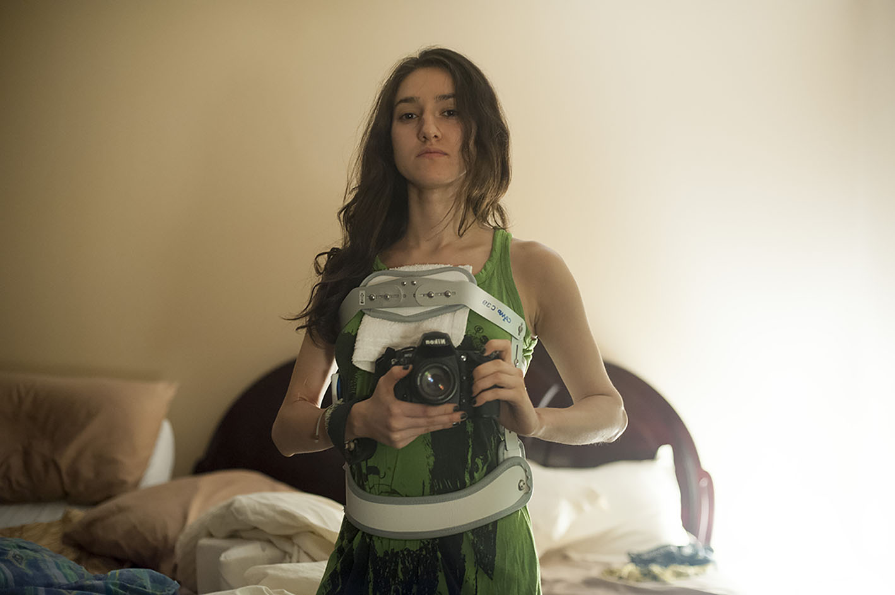
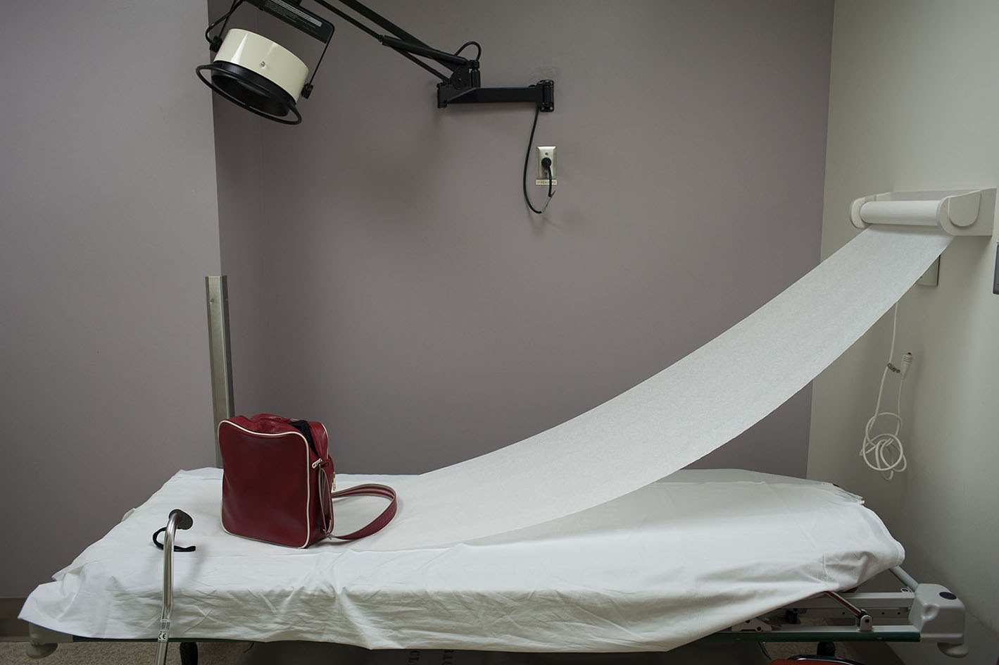
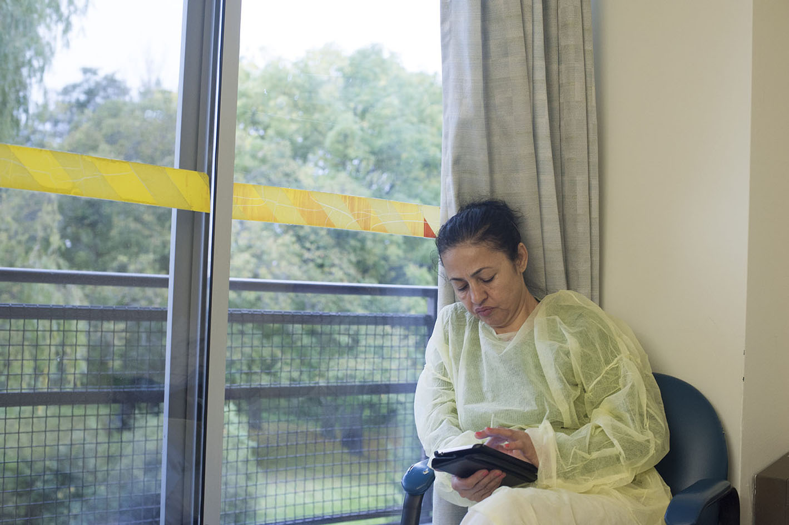
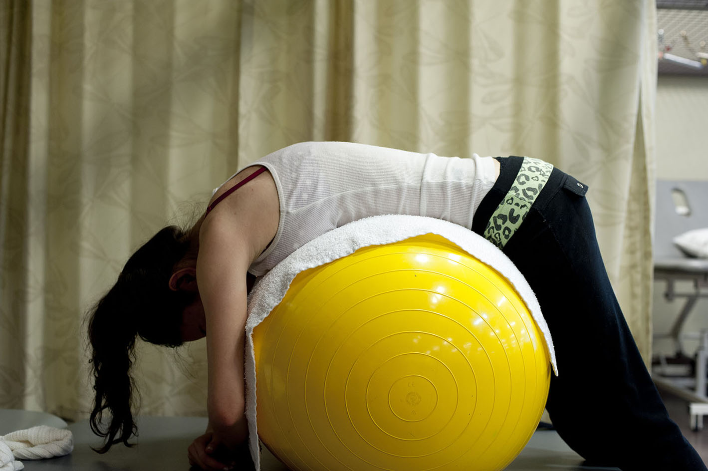
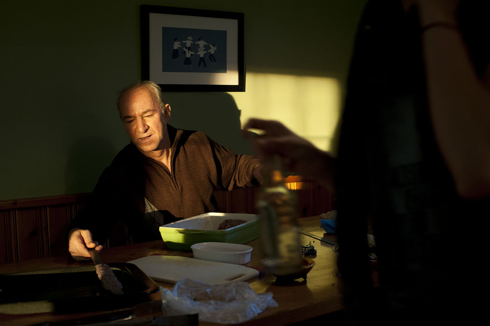
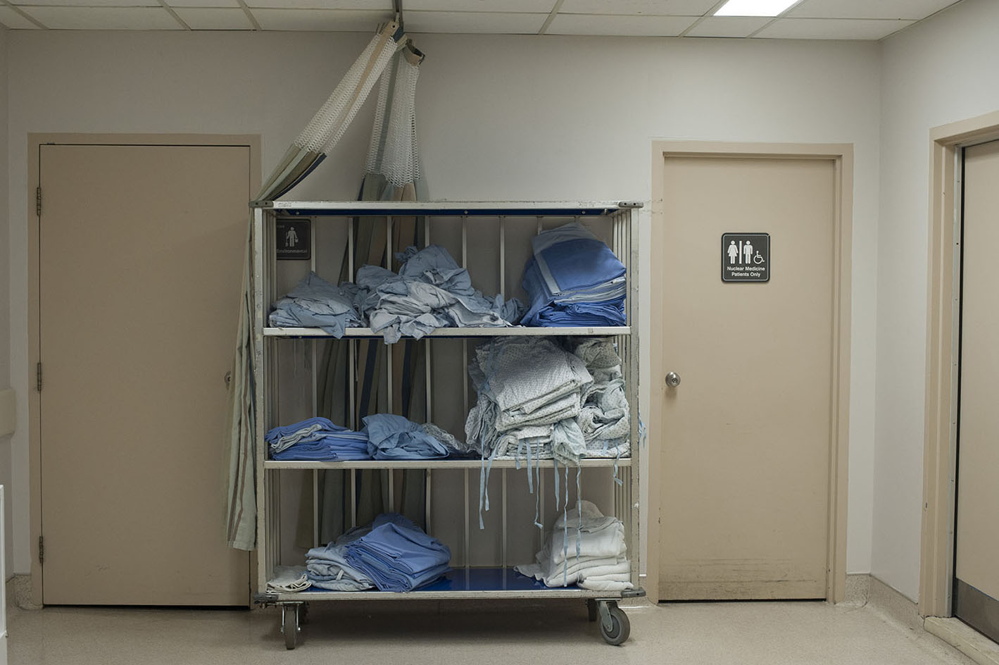
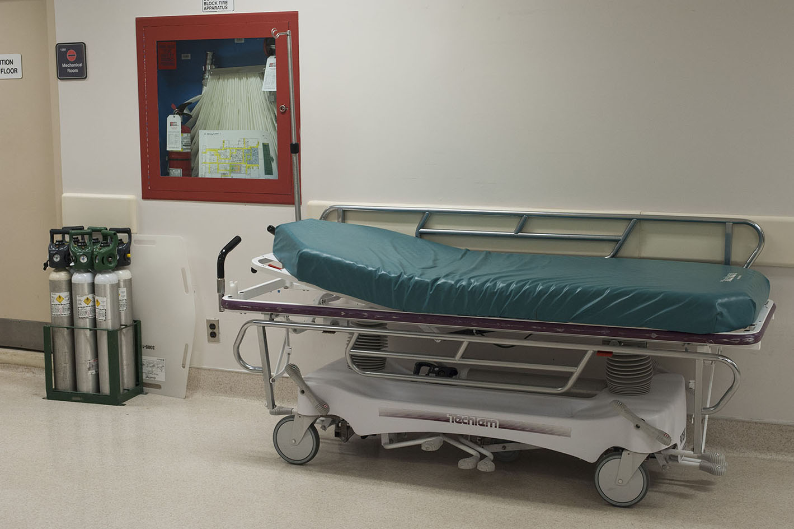

"CONCRETE BED"
Project 1

The Beginning
Here I am.


This on-going series stands for the anguish an individual and their loved ones face when fighting to regain strength. An unfamiliar anxiety, grief and pain are part of the daily routine when fragile minded; it is as though one belongs to a stranger's flesh.


Although this photo-essay is a continuous project,
it, too, is a personal diary of a survival.